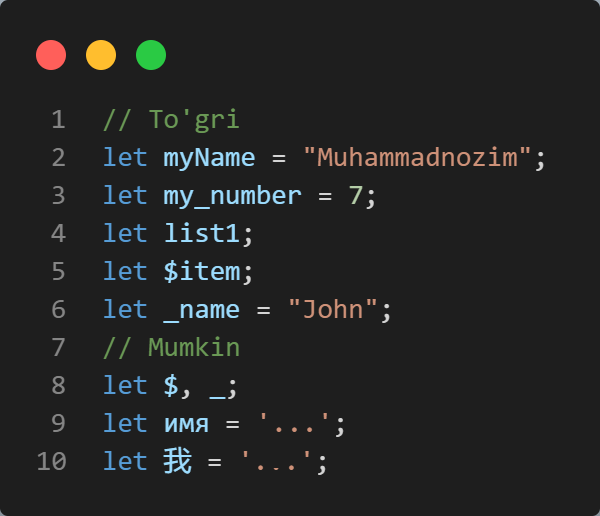
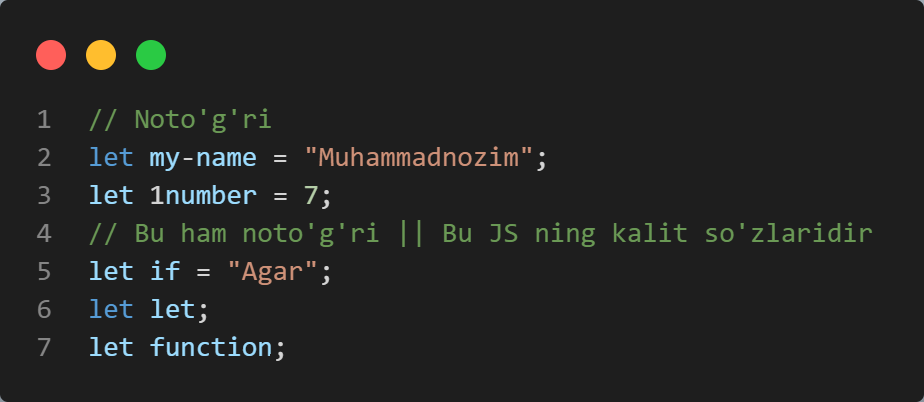
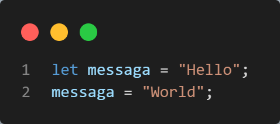
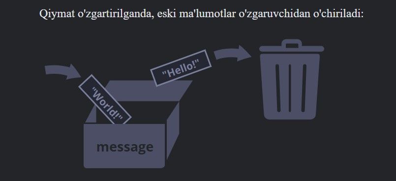
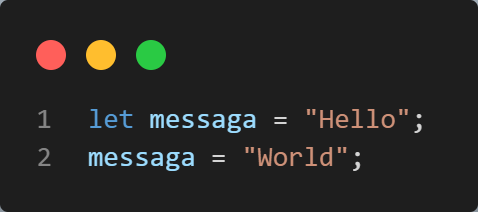
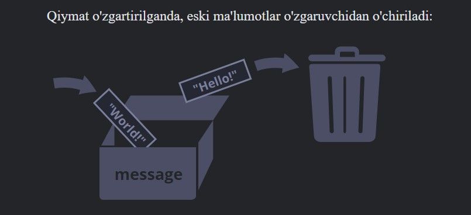

JS VARIABLES (info)


Oddiy so'zlar bilan aytganda, o'zgaruvchi bu - biron-bir qiymat uchun container (quti) hisoblanadi.
- O'zgaruvchilarga misollar: - myNumber, my_number, list1, $item, _name, a, b, $, _
- O'zgaruvchilarning noto'g'ri misoli: - 1number, my-number, if, let, function va h.k
Quyidagi rasmda to'g'ri o'zgaruvchilarga misollar keltirilgan.

Quyidagi rasmda noto'g'ri o'zgaruvchilarga misollar keltirilgan.

"JavaScript identifikatorlari katta-kichik harflarga sezgir."
Masalan: Ism va ism. bu ikki xil o'zgaruvchidir.
Masalan: Ism va ism. bu ikki xil o'zgaruvchidir.
 


